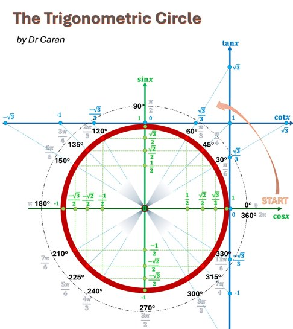
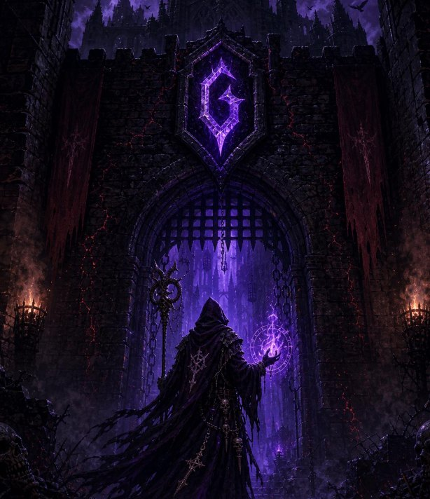
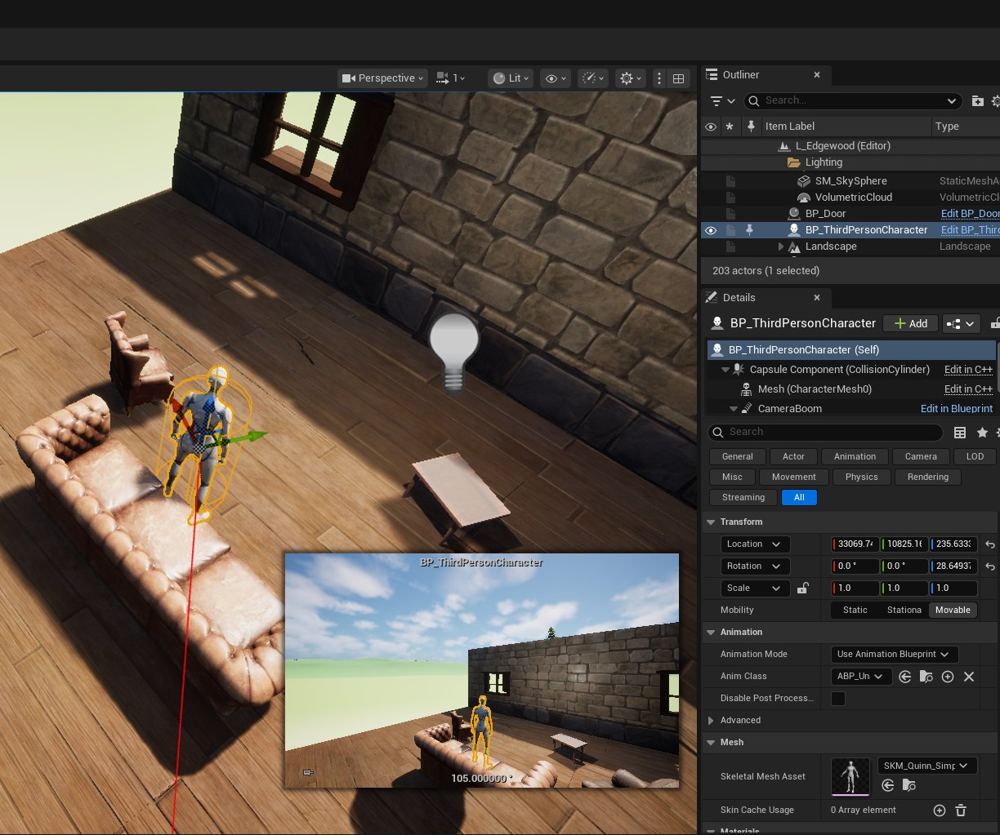
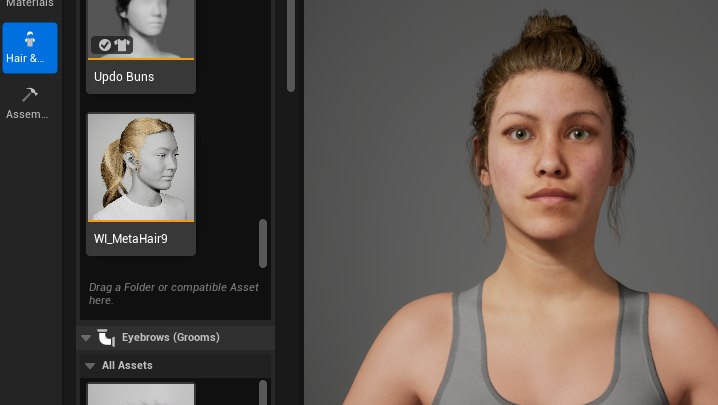

FOR A FINAL-YEAR PROJECT, BSc COMPUTER SCIENCE & AI, UNIVERSITY OF SUSSEX
This is where it all began: my first game, and my first time working with Unity. My son needed a final-year project, I had an idea, and we joined forces. I designed the world and the maths; he built it.
The idea was an EduRPG (Educational Role-Playing Game) for maths: an online role-playing game where learning happens through adventure. In The Red Circle you explore a fantasy world, and GCSE maths is part of how you play. In battle, you answer quick multiple-choice questions to strike; on quests, bigger problems stand between you and what you’re after.
It was only a prototype, made to find out how such a game should look and feel. But it went further than we hoped. The International Study Centre at the University of Sussex funded its further development, and in July 2019 we presented it at the 26th Adults Learning Mathematics conference in Lund, Sweden. My son’s project received the final-year award, with a grade of 91/100.
Smol, by a cottage in the villageA graveyard at dusk
Credits: Ilias Olivotos (development) · The International Study Centre, University of Sussex (funding)
the green cabinet
The Red Circle: Immersive Adventures in Higher Maths
2nd Game of The Red Circle series
UNITY · 2023 · PhD RESEARCH
The Red Circle came back, rebuilt from everything the first game taught me, and this time for higher maths. There are very few immersive games for mathematics beyond school level, and I wanted to make one.
I designed it as part of my PhD. Instead of putting questions in front of you, the game is built from the patterns and structures of mathematics itself. You explore a mysterious village and help its people escape an evil spirit, and through six of the game’s mechanics you gradually pick up the rules of derivatives, without ever stopping to study them.
It’s made for adults, whatever your background in maths or in games, and it works well alongside a course as well as on its own.
Windows only. Download the whole folder, then open RC.exe to play.
Credits: Prof Paul Newbury and Prof Kate Howland, University of Sussex (supervision) · Ilias Olivotos (development) · Moira Olivotou (proofreading) · Fredi Prenga (support)
the yellow cabinet
Off Course: Air Investigation
3rd Game of The Red Circle series
UNITY · 2026 · SPONSORED BY THE CIVIL AVIATION AUTHORITY AND THE DEPARTMENT FOR TRANSPORT
A plane vanishes from the radar, and you’re the apprentice incident investigator sent to find out why.
This was my work as a research fellow, with a team from the Department of Informatics at the University of Sussex: I designed the maths, the story and the SavviPad. It’s made for students of aeronautical engineering, but anyone who likes a good mystery can play.
You start in the investigation lab: gathering evidence, watching briefing videos, and working on the SavviPad, your investigator’s tablet, with the theory, the evidence, a map, a calculator and room to work things out. Your maths finds the crash site. Then you travel there to examine the wreck: checking the fuel tanks and working through low-altitude flight, a headwind and some cargo nobody declared, until you can tell whether the plane simply ran out of fuel, or something else brought it down.
It’s built for the classroom, to work alongside the teacher, not instead of them. The maths is real and so is the setting, so abstract ideas finally have somewhere to land.
Welcome to Aeronspire: the air accident investigation centre
Windows only. Download the whole folder, then open the game’s .exe file to play.
Credits: Dr Daniel Creed (research collaborator) · the Civil Aviation Authority and the Department for Transport (funding)
the purple cabinet
The Red Circle: The Thirteenth Hour (working title)
4th Game of The Red Circle series
BROWSER CARD GAME · IN THE MAKING
IN THE MAKING
Still in its early days.
The Thirteenth Hour is a competitive fantasy card game built around the trigonometric circle. In a mysterious city governed by an ancient celestial clock, you play a thief, racing your rivals to unlock magical vaults and claim their treasures. You collect and combine cards, manipulate angles and use clever tactics to outwit your opponent, and to succeed, you must master the clock’s mechanisms.
It’s planned as a browser game, for two players or one against the AI, blending tactical decisions, deck-building and an intriguing story. The maths isn’t presented as exercises: it’s how the clock works, and so it’s how you win.

The trigonometric circle

At the gate
Credits: Ilias Olivotos (development)
the red cabinet
Edgewood Lands: An Oughtobiography
UNREAL ENGINE · IN THE MAKING
IN THE MAKING
Edgewood has lived inside me since I was ten. It has followed me ever since, growing as I grew: a slow, grounded rural world with a touch of cosy magic, where people still have time for each other. It’s the place I go when reality gets too much.
An Oughtobiography is the life that ought to have been. I’m autistic, and what others call ‘the real world’ can be full of lies and injustice that make no sense to me. Edgewood embraces my own reality.
I’m writing Edgewood as a book, and this game is the same story. You explore the land and meet the people who live there. Each character knows who they are, what they’ve lived through and what they’re doing here, because each one carries their own part of the story, and AI gives them a voice. Ask them anything. They’ll answer as themselves, and conversation by conversation, the story tells itself back to you.
A book you don’t read. A book you walk into.

Building the first room of the house

A character taking shape
Credits: Me, myself and I
behind the scenes
The Maker
The Red Circle series
Who am I as a game maker?
To be written.
The Red Circle series
To be written.
Why games for learning?
To be written.
What comes next
To be written.
found on the floor
A Riddle Ticket
ADMIT ONE · A RIDDLE
THE ANSWER
I have no beginning and no end, yet every point on me is the same distance from my heart. What am I?
A bat and a ball cost £1.10 together. The bat costs £1 more than the ball. How much is the ball?
How many times a day do the hands of a clock make a right angle?
I’m an odd number. Take away one letter and I become even. What am I?
What has hands and a face, but can’t hold anything or smile?
Three times a number is the same as that number plus ten. What is the number?
A clock takes 5 seconds to strike six. How long does it take to strike twelve?
A farmer has 17 sheep. All but 9 run away. How many are left?
Which three positive whole numbers give the same answer whether you add them or multiply them?
I’m a three-digit number. My tens digit is five more than my ones digit, and my hundreds digit is eight less than my tens digit. What am I?
How can you add eight 8s to make 1,000?
What is the angle between the hands of a clock at a quarter past three?
A snail climbs 3 metres up a 10-metre well each day, and slips back 2 metres each night. On which day does it reach the top?
On the trigonometric circle, at which angle between 0° and 360° are the sine and the cosine equal, and both negative?
What do you get if you divide the circumference of a pumpkin by its diameter?
Why was six afraid of seven?
If two’s company and three’s a crowd, what are four and five?
I’m the only number whose letters, written in English, are in alphabetical order. What am I?
How many times can you subtract 10 from 100?
A drawer in the dark holds black socks and white socks. How many must you take out to be sure of a matching pair?